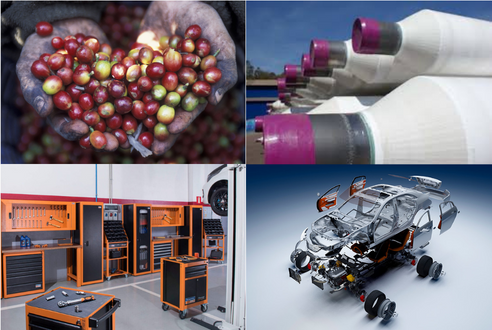

Sobre

Trajetória profissional
Lavrador de café de 12 a 15 anos e ajudante de oficina mecânica de 16 a 18 anos na cidade de Manhuaçu.
Auxiliar fiscal em contabilidade, garçom e operador de processo industrial dos 19 aos 23 anos em Belo Horizonte.
Operador de processo industrial, inspetor de qualidade e Team Leader de produção dos 24 aos 37 anos em Betim.
+ detalhesFormações e Cursos
2º grau em escola pública.
Curso Técnico em Informática.
Gestão da Produção Industrial.

Certificados Front-end
Certificados Back-end